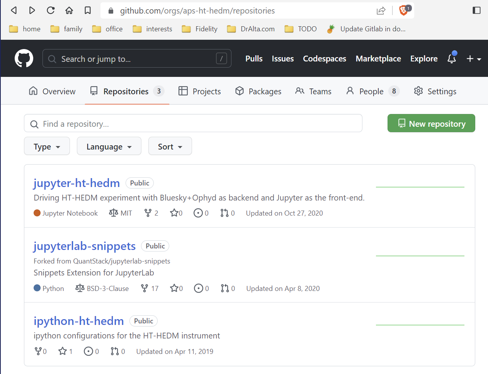
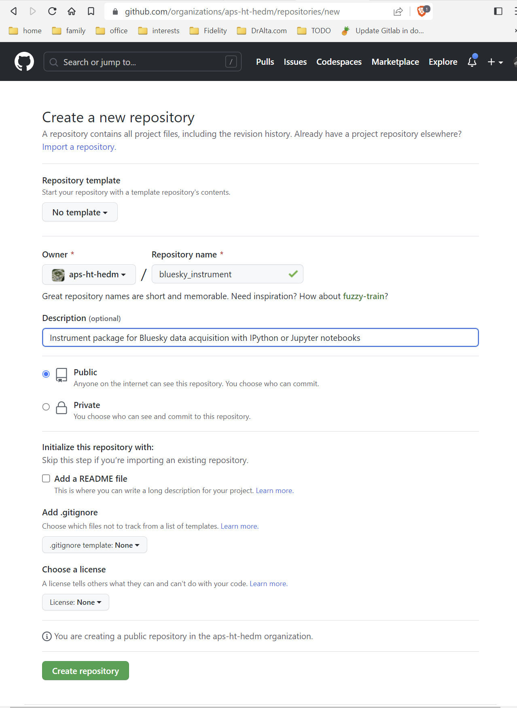
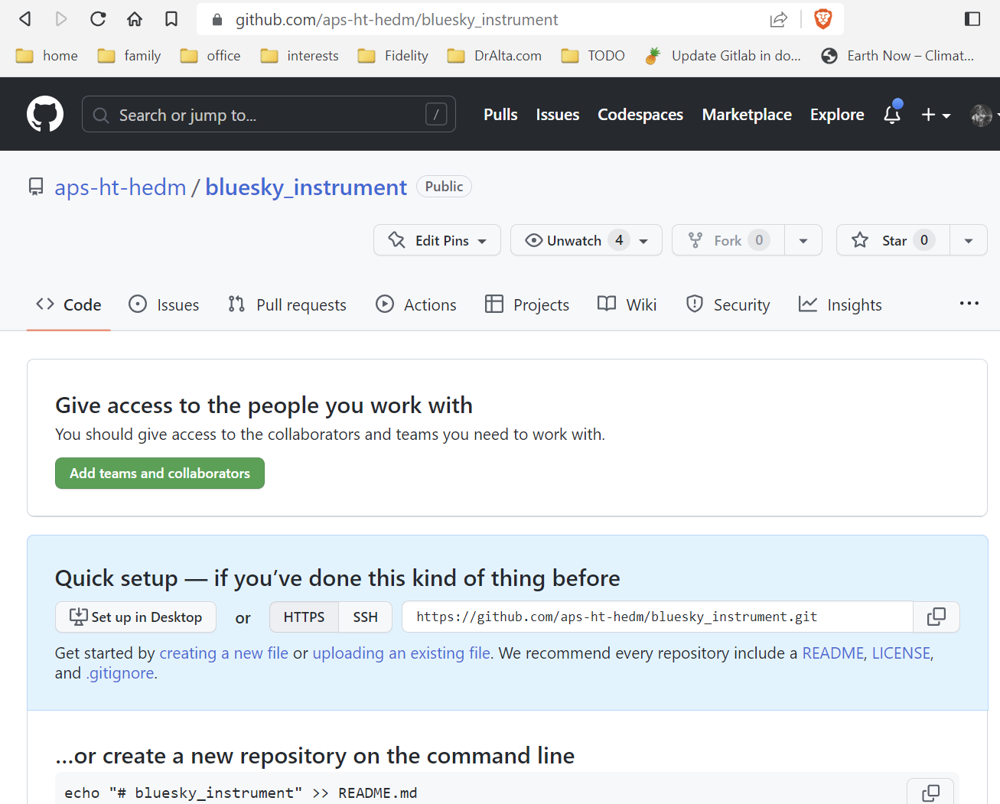

GitHub Repository#
Visit your GitHub organization to create a new repository using the web interface. This is the organization page for the APS High-temperature HEDM organization.

Create a new repository on GitHub#
Click the (green) New repository button.
On the new page, fill out the form:
Repository template:
No templateOwner: as you choose
Repository name:
bluesky_instrumentDescription:
Instrument package for Bluesky data acquisition with IPython or Jupyter notebooksPublic: make this a public repository, not Private (you would use the APS GitLab server for a private repo)
Add a README file: no, do not check this
Add
.gitignore: no, do not add this a license now file

Once you have filled out the form, click the (green) Create repository button. YMMV
Note the repository URL in the Quick setup section:
https://github.com/aps-ht-hedm/bluesky_instrument.git, it will be used
next.

GitHub Teams#
If you choose, follow GitHub’s prompts to give access to collaborators and teams.
Clone the repo locally#
Once the new repo has been created on GitHub, it is time to clone it to your workstation at APS.
Log into your instrument account on your APS workstation. It is assumed
you have already created the ~/bluesky directory for your instrument.
Clone the new repository from GitHub to a local directory. Since the
~/bluesky directory is not empty, do these steps in a temporary
directory.
(bluesky_2023_2) s6hedm@otz:~/bluesky$ cd /tmp
(bluesky_2023_2) s6hedm@otz:/tmp$ git clone https://github.com/aps-ht-hedm/bluesky_instrument.git
Cloning into 'bluesky_instrument'...
warning: You appear to have cloned an empty repository.
Copy (actually, move) the .git directory into the ~/bluesky
directory. This is the directory with all the version and branch
information. It is what makes a normal directory into a local git
repository.
(bluesky_2023_2) s6hedm@otz:/tmp$ mv ./bluesky_instrument/.git ~/bluesky/
Now, you are done with this temporary directory so remove it:
(bluesky_2023_2) s6hedm@otz:/tmp$ /bin/rm -rf ./bluesky_instrument/